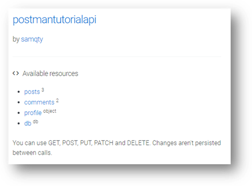

Download and install postman from this link https://www.getpostman.com/ pick the install that appropriate for you operating system. It has a native application for all the major operating systems and it also has a chrome plugin that can be install from the chrome store.
This tutorial is based on the version and environment below
